library(ggplot2)
library(forecast)Registered S3 method overwritten by 'quantmod':
method from
as.zoo.data.frame zoo El análisis de series temporales es una técnica poderosa que se utiliza para comprender y prever comportamientos y tendencias a lo largo del tiempo. Este tipo de análisis es particularmente valioso en contextos donde los datos se recogen en intervalos regulares y presentan patrones que pueden ser aprovechados para hacer predicciones precisas. Las series temporales permiten identificar componentes clave como tendencias a largo plazo, estacionalidades periódicas y fluctuaciones cíclicas, ofreciendo una visión profunda del comportamiento dinámico de los datos.
library(ggplot2)
library(forecast)Registered S3 method overwritten by 'quantmod':
method from
as.zoo.data.frame zoo Las técnicas de análisis de series temporales incluyen modelos como por ejemplo ARIMA (Autoregressive Integrated Moving Average) que hemos visto en clase, que es utilizado para modelar y prever series estacionarias y no estacionarias.
dataset <- read.csv("datasets/train.csv")Sin embargo, en este libro, al analizar un dataset de cuentas de Instagram, nos encontramos con un problema: no tenemos atributos temporales. Nuestro dataset no contiene marcas de tiempo ni ninguna variable que refleje la evolución cronológica de las métricas. Esto impide la aplicación directa de técnicas de series temporales, ya que no hay un componente temporal que permita rastrear cambios a lo largo del tiempo. Tampoco tenemos ningún tipo de orden en nuestros datos de forma que cada observación se pueda asignar temporalmente ni ordenar de ninguna forma.
Aún así, Vamos a intentar aplicar esta técnica a alguna variable de nuestro dataset, a pesar de que no tenga carácter temporal:
Vamos a usar esta variable para crear nuestras series temporales, como hemos comentado, los datos no tienen ningún orden ni tenemos otras variables que representen tiempo, pero vamos a intentar aplicar algunas cosas de lo aprendido a esta variable para que veamos si se puede sacar algo de informcion.
Creamos la serie temporal, imaginando que empieza en el año 2000 y cada dato representa un mes del año:
serie <- ts(dataset$description.length, frequency = 12, start = 2000)
serie Jan Feb Mar Apr May Jun Jul Aug Sep Oct Nov Dec
2000 53 44 0 82 0 81 50 0 71 40 54 54
2001 0 103 98 46 0 48 63 106 40 35 30 27
2002 0 109 0 132 126 122 138 0 50 35 56 9
2003 0 81 134 0 2 0 23 138 35 93 4 1
2004 4 23 91 57 108 30 82 12 54 0 12 0
2005 3 39 0 68 129 57 64 42 71 0 70 74
2006 8 35 0 0 28 18 28 36 2 11 70 29
2007 24 21 81 34 40 12 0 59 15 54 16 73
2008 24 0 26 0 0 0 0 28 55 140 122 113
2009 38 0 23 0 89 30 0 0 0 12 123 0
2010 0 0 40 0 33 0 5 0 23 35 150 26
2011 149 129 0 18 74 0 59 148 0 15 46 5
2012 98 55 19 71 133 150 43 37 35 87 59 0
2013 0 9 12 0 0 95 0 46 123 117 26 0
2014 58 0 30 62 137 149 14 19 131 0 5 0
2015 11 0 27 10 72 3 51 44 0 73 70 35
2016 13 105 91 0 48 48 126 0 53 8 67 20
2017 26 86 51 26 18 96 17 0 62 86 148 1
2018 39 35 103 0 61 44 0 0 0 112 123 24
2019 34 19 0 42 50 67 134 101 0 0 17 0
2020 32 0 80 2 0 146 0 0 0 0 6 0
2021 0 0 64 0 0 0 49 23 120 34 25 0
2022 12 0 9 1 18 34 23 19 139 13 50 46
2023 30 26 0 0 0 27 37 31 20 7 0 0
2024 0 0 0 0 24 0 43 0 0 0 0 0
2025 0 0 0 0 0 0 0 0 0 0 0 0
2026 0 0 0 0 0 0 43 0 0 0 13 0
2027 0 0 0 0 0 0 0 0 0 0 0 0
2028 0 0 0 0 0 0 9 0 0 0 0 18
2029 0 10 61 0 0 0 0 0 0 0 0 0
2030 22 0 0 0 2 0 146 0 6 50 0 0
2031 0 39 0 0 0 0 0 5 91 2 0 0
2032 0 0 37 0 0 0 0 0 0 0 0 0
2033 0 0 148 0 0 0 0 0 0 0 0 0
2034 0 0 0 0 0 0 149 0 0 0 0 0
2035 22 0 0 0 0 0 2 0 0 0 0 0
2036 0 20 0 0 0 0 0 0 0 0 148 0
2037 50 0 2 0 0 0 0 0 0 0 34 0
2038 0 0 0 0 0 0 32 0 0 0 0 0
2039 0 0 59 0 6 0 0 0 0 0 0 0
2040 0 0 0 0 0 0 0 0 0 0 0 0
2041 0 1 0 0 0 0 0 0 0 0 0 0
2042 0 0 0 0 0 0 0 0 0 0 0 0
2043 0 0 0 0 0 0 0 0 0 0 0 0
2044 0 0 0 0 0 0 0 19 0 0 0 0
2045 0 0 0 0 43 0 0 0 0 0 0 0
2046 0 0 0 0 0 0 0 33 0 0 0 0
2047 43 0 19 0 5 0 28 0 21 0 11 0length(serie)[1] 576Como tenemos 576 datos y hemos simulado que cada uno corresponde a un mes del año, empezando en el año 2000 nos da por resultado que nuestros datos llegan hasta el año 2047.
Vamos a ver nuestra serie dibujado:
plot.ts(serie)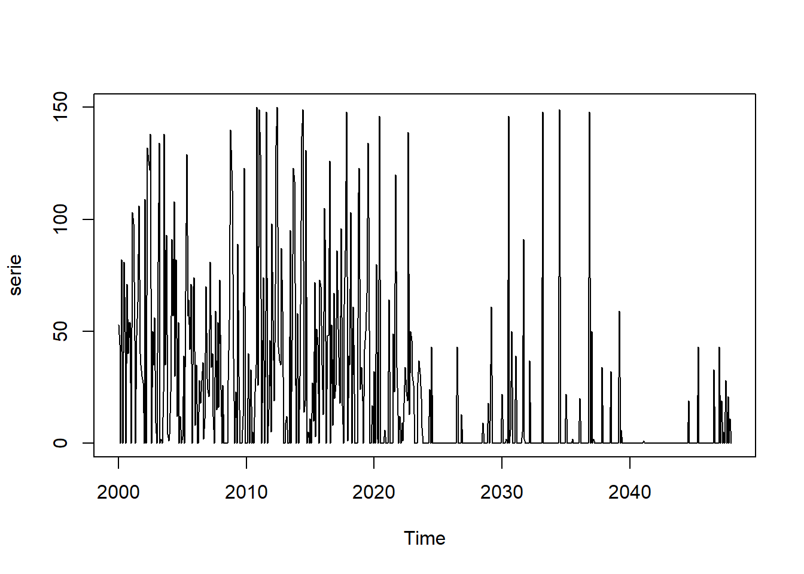
Como podemos ver es bastante aleatorio, ya que realmente lo es, se trata de las longitudes de descripción de distintas cuentas de Instagram sin ningún orden ni nada de carácter temporal.
Con autoplot podemos visualizar el mismo gráfico pero con un estilo similar a la filosofia que sigue ggplot2:
autoplot(serie)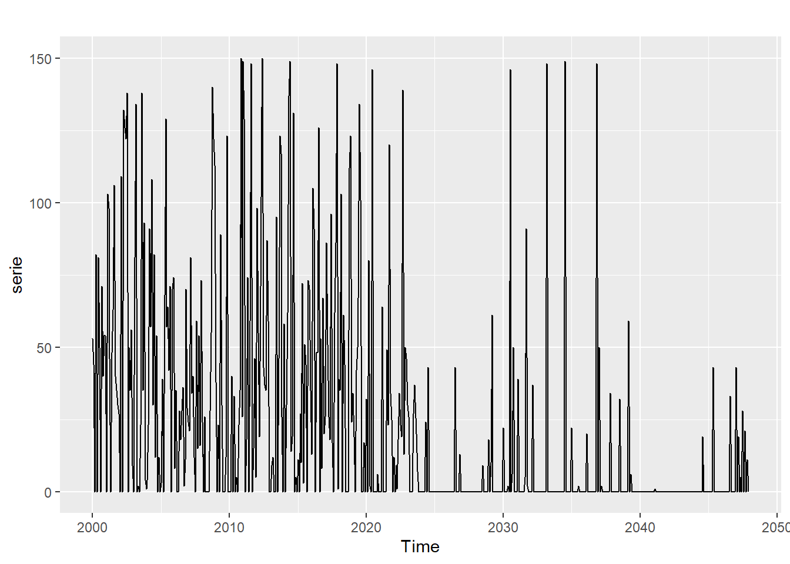
Veamos el gráfico de seasonplot, el cual nos permite observar si nuestra serie temporal es estacional. Este gráfico muestra si cada año se repiten patrones específicos, ayudándonos a identificar y visualizar la estacionalidad en la serie temporal.
ggseasonplot(serie, col = rainbow(12), year.labels = TRUE)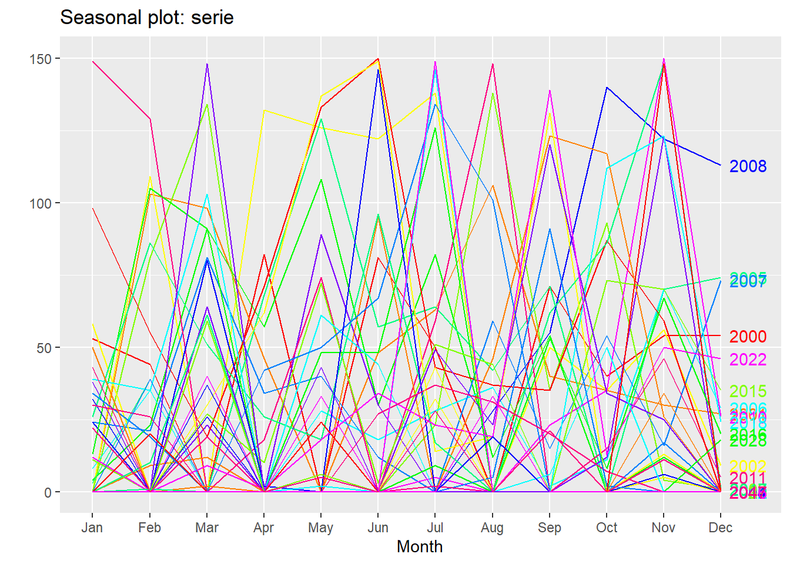
Claramente no muestra signos de estacionalidad, pues es prácticamente aleatorio, no hay ningún tipo de patrón.
Vamos a probar a realizar previsiones con los métodos básicos que hemos visto. Estos métodos de por si son demasiado sencillos, y para el caso de nuestra serie que venimos diciendo que no es adecuada, sabemos que no va a dar ningún resultado bueno, pero vamos a aplicarlos para que lo veamos. Luego usaremos algunos métodos más complejos:
avg.serie <- meanf(serie, 10)
plot(avg.serie)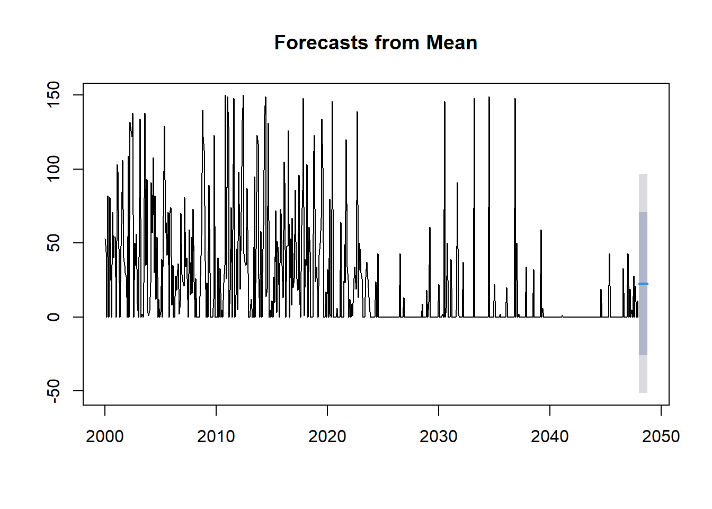
naive.serie <- naive(serie, 10)
plot(naive.serie)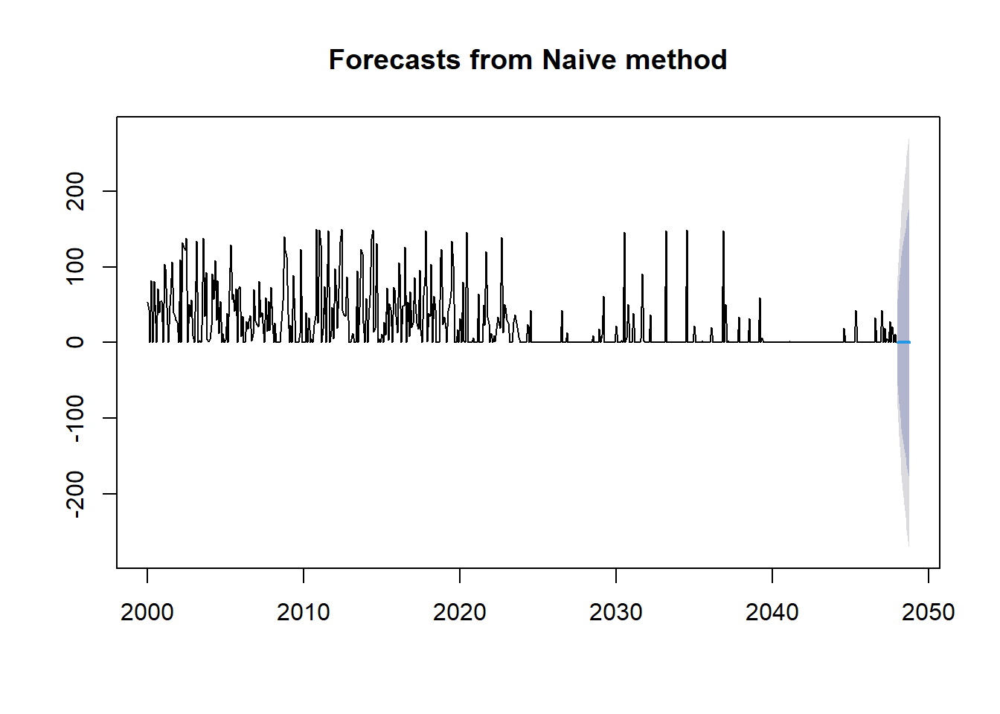
snaive.serie <- snaive(serie, 10)
plot(snaive.serie)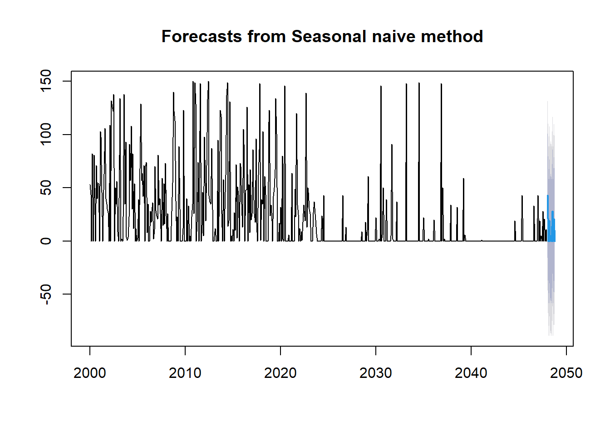
rwf.serie <- rwf(serie, 20, drift = TRUE)
plot(rwf.serie)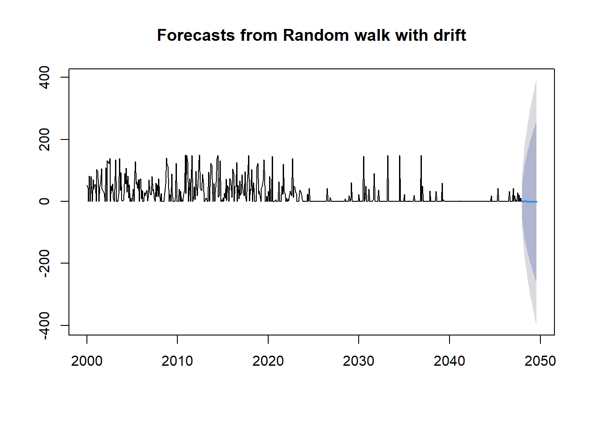
Como hemos comentado, ningún método da una previsión que tenga coherencia, tan solo el método naive estacional, aunque ya sabemos que este solo replica la predicción del año anterior.
Una serie temporal se puede descomponer en tres componentes: estacional, tendencia y la componente de aleatoriedad.
Vamos a aplicar la descomposición a nuestra serie:
decomp <- decompose(serie)Vamos a visualizarlo:
plot(decomp)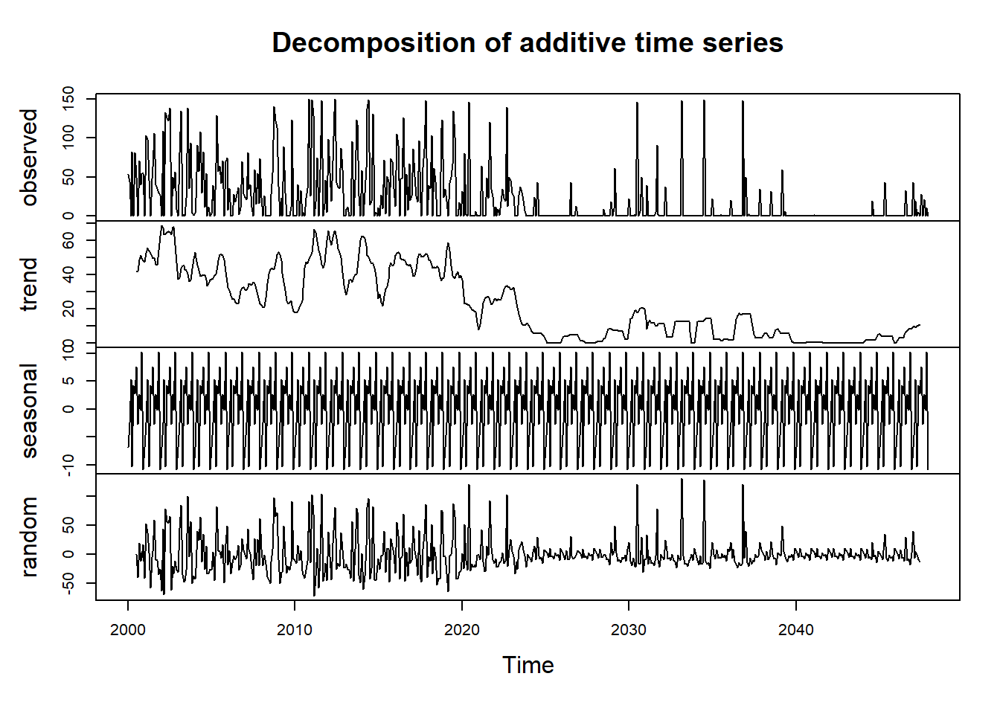
Si nuestra serie fuese realmente una serie válida, estaríamos observando datos interesantes, por ejemplo, podríamos decir que la tendencia global de la longitud de la descripción ha sido bajista, y que tenemos una componente estacionaria en la que hay ciertos momentos del año que hay un pico alto y otros muy bajos.
Pero como el tiempo aquí “nos lo hemos inventando” sacar esas conclusiones es también inventarnoslo.
Por útimo, vamos a utilizar métodos más avanzados de previsiones, simplemente para visualizar los resultados.
El método Holt-Winters es una técnica de suavizamiento exponencial que permite modelar y prever series temporales con tendencia y estacionalidad. Este método tiene tres componentes: el nivel (alpha), la tendencia (beta) y la estacionalidad (gamma). Es bueno usarlo en series temporales con tendencia y estacionalidad o con patrones estacionalides conocidos.
Vamos a aplicarlo a nuestra serie temporal:
ts.p1.forecasts <- HoltWinters(serie, beta = FALSE, gamma = FALSE)
plot(ts.p1.forecasts)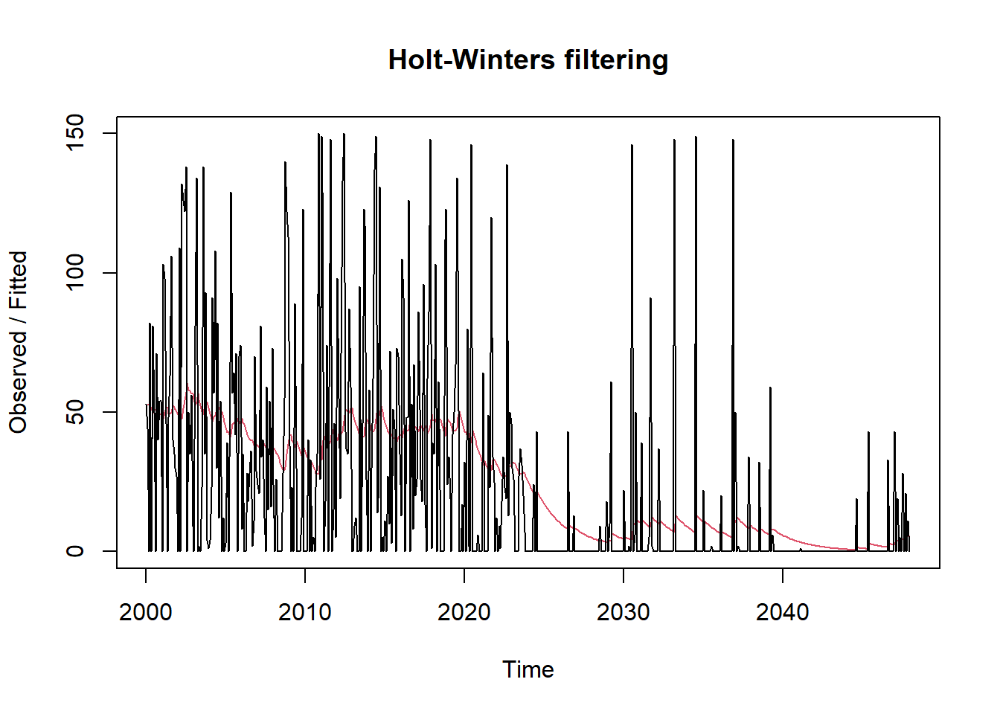
Visualicemos una predicción de un año:
holtwinters_forecast <- forecast(ts.p1.forecasts, h = 12)
plot(holtwinters_forecast)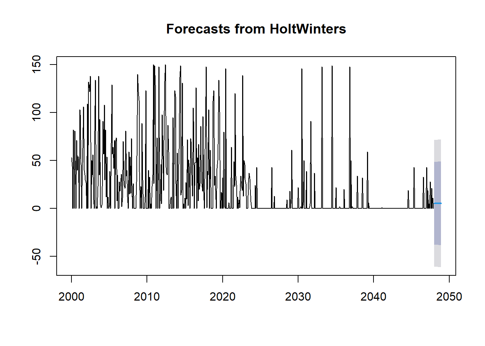
ARIMA (AutoRegressive Integrated Moving Average) es un modelo popular en el análisis de series temporales, utilizado para modelar y prever series que pueden no ser estacionarias. El modelo ARIMA se define por tres parámetros: p (autoregresivo), d (diferenciación) y q (media móvil). El método auto.arima selecciona automáticamente los mejores parámetros para el modelo ARIMA. Es bueno usar ARIMA para series temporales estacionarias.
Aplicamos el modelo auto.arima a nuestra serie temporal:
autoarima_model <- auto.arima(serie)
plot(forecast(autoarima_model, h = 20))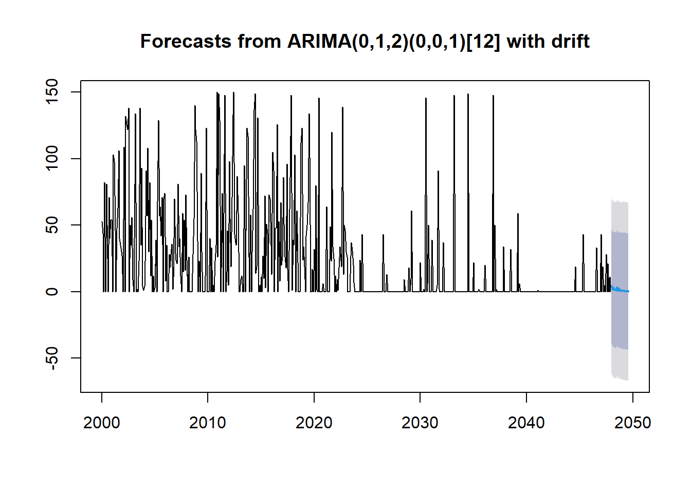
Queda más que claro que lo que estamos haciendo no conduce a resultados con sentido, hay muchas más cosas que podemos hacer con series temporales, pero sabiendo que no nos conducen a nada, vamos a parar aquí.
En este análisis, hemos aplicado varias técnicas de previsión de series temporales, como Holt-Winters y ARIMA, a una variable que en realidad no tiene un carácter temporal. Aunque hemos visto cómo se pueden usar estas técnicas, los resultados no tienen sentido práctico en este caso, ya que la serie de datos es aleatoria y no presenta patrones temporales reales.
Sin embargo, es importante comprender y saber aplicar estas técnicas, ya que son herramientas muy valiosas en el análisis de datos cuando se dispone de series temporales con componentes significativos de tendencia y estacionalidad.